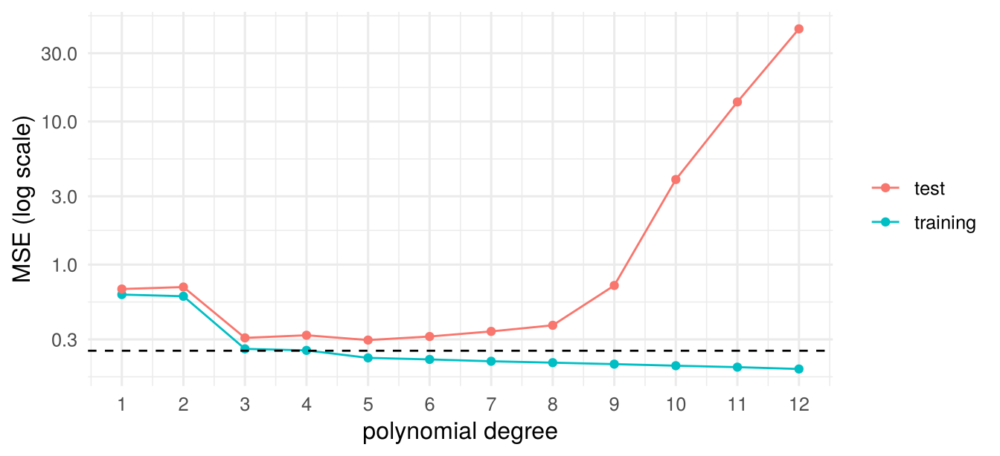
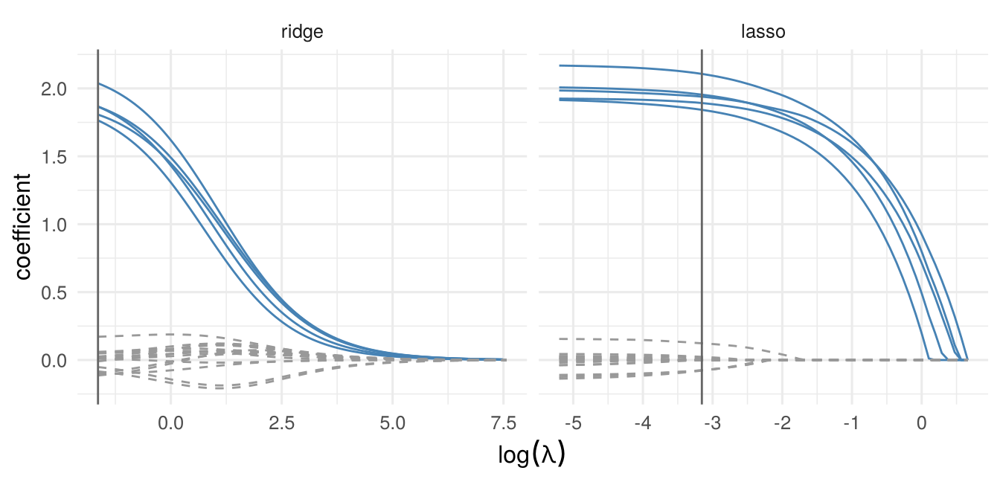

5 Introduction to Statistical Learning
\[ \newcommand{\bm}[1]{\boldsymbol{#1}} \newcommand{\btheta}{\boldsymbol{\theta}} \newcommand{\bbeta}{\boldsymbol{\beta}} \newcommand{\bgamma}{\boldsymbol{\gamma}} \newcommand{\bx}{\boldsymbol{x}} \newcommand{\by}{\boldsymbol{y}} \newcommand{\bX}{\boldsymbol{X}} \newcommand{\bR}{\boldsymbol{R}} \newcommand{\br}{\boldsymbol{r}} \newcommand{\bh}{\boldsymbol{h}} \newcommand{\bz}{\boldsymbol{z}} \newcommand{\bZ}{\boldsymbol{Z}} \newcommand{\bW}{\boldsymbol{W}} \newcommand{\bA}{\boldsymbol{A}} \newcommand{\bV}{\boldsymbol{V}} \newcommand{\bu}{\boldsymbol{u}} \newcommand{\bw}{\boldsymbol{w}} \newcommand{\bpsi}{\boldsymbol{\psi}} \newcommand{\balpha}{\boldsymbol{\alpha}} \newcommand{\bdelta}{\boldsymbol{\delta}} \newcommand{\bmu}{\boldsymbol{\mu}} \newcommand{\bg}{\boldsymbol{g}} \newcommand{\bS}{\boldsymbol{S}} \newcommand{\bD}{\boldsymbol{D}} \newcommand{\bI}{\boldsymbol{I}} \newcommand{\E}{\mathbb{E}} \newcommand{\Var}{\operatorname{Var}} \newcommand{\AVar}{\operatorname{Avar}} \newcommand{\cvp}{\xrightarrow{\;p\;}} \newcommand{\cvd}{\xrightarrow{\;d\;}} \newcommand{\iid}{\overset{\text{iid}}{\sim}} \newcommand{\KLIC}{\operatorname{KLIC}} \newcommand{\pd}[2]{\frac{\partial #1}{\partial #2}} \]
Readings
Econometrics is mostly about estimating parameters with a causal or structural interpretation. Statistical (or machine) learning is mostly about prediction: given a new \(\bx_0\), predict \(y_0\) as accurately as possible. The two goals call for different tools. For prediction, a biased estimator is welcome if it reduces the variance enough, and a model is judged by how it performs on data it has not seen. This chapter introduces the basic ideas: the bias–variance trade-off for prediction, model selection by penalties and cross-validation, and shrinkage estimators (ridge, lasso, elastic net). Two short outlook sections sketch tree-based methods and the use of the lasso for causal inference.
5.1 Prediction and the bias–variance trade-off
Terminology. In supervised learning we observe an outcome \(y\) and features (regressors) \(\bx\); it is called regression if \(y\) is continuous and classification if \(y\) is categorical. In unsupervised learning there is no outcome, and the aim is to find structure in \(\bx\) (e.g. clusters). We focus on regression. The training sample \(\{(y_i,\bx_i)\}_{i=1}^n\) is used to fit a prediction rule \(\hat f(\bx)\); a test sample of new observations \((y_0,\bx_0)\) from the same distribution is used to judge it.
Let \(y=f(\bx)+u\) with \(\E[u\mid\bx]=0\) and \(\Var(u\mid\bx)=\sigma^2\), so that \(f(\bx)=\E[y\mid\bx]\) is the best predictor under squared loss.
Theorem 5.1 (Bias–variance decomposition of the prediction error) For a test point \((y_0,\bx_0)\) independent of the training sample, \[ \E\big[(y_0-\hat f(\bx_0))^2\mid\bx_0\big]=\underbrace{\Var\big[\hat f(\bx_0)\big]}_{\text{variance}}+\underbrace{\big\{\E[\hat f(\bx_0)]-f(\bx_0)\big\}^2}_{\text{bias}^2}+\underbrace{\sigma^2}_{\text{irreducible}}, \] where \(\E\) and \(\Var\) are over training samples given \(\bx_0\).
Proof
Write \(y_0-\hat f=(y_0-f)+(f-\E\hat f)+(\E\hat f-\hat f)\), with \(f=f(\bx_0)\) and \(\hat f=\hat f(\bx_0)\). The first term is \(u_0\), which has mean zero and is independent of the training sample; the third has mean zero; the second is a constant. Squaring and taking expectations, all cross products vanish.
The irreducible error \(\sigma^2\) cannot be reduced by any method. A more flexible method (more regressors, a smaller bandwidth, a smaller penalty) has smaller bias and larger variance. The best predictor balances the two, exactly as the MSE-optimal bandwidth in Chapter 4.
In-sample fit is optimistic. The training MSE \(n^{-1}\sum_i(y_i-\hat f(\bx_i))^2\) uses the same data to fit and to evaluate. It falls monotonically as the model becomes more flexible, while the test MSE eventually rises (Figure 5.1). For OLS with \(k\) regressors and fixed design, \(\E[\text{training MSE}]=\sigma^2(n-k)/n\), whereas the expected squared error for new outcomes at the same \(\bx_i\) is \(\sigma^2(n+k)/n\): the optimism is \(2k\sigma^2/n\) (Problem Set 5, Problem 1). There are two remedies: penalize the in-sample fit for model size, or estimate the test error directly on data not used for fitting.
5.2 Model selection
5.2.1 Penalized fit criteria
For a model with \(k\) parameters and maximized log-likelihood \(\ln\hat L\), \[ \text{AIC}=-2\ln\hat L+2k,\qquad \text{BIC}=-2\ln\hat L+k\ln n , \] and smaller values are preferred. For the normal linear regression model with \(\hat\sigma^2=\text{MSE}=n^{-1}\sum_i\hat u_i^2\), \(-2\ln\hat L=n\ln\text{MSE}+n(1+\ln2\pi)\), so up to a constant \(\text{AIC}=n\ln\text{MSE}+2k\) and \(\text{BIC}=n\ln\text{MSE}+k\ln n\). Two related measures for OLS:
- Adjusted \(R^2\), \(\bar R^2=1-\frac{\sum_i\hat u_i^2/(n-k)}{\sum_i(y_i-\bar y)^2/(n-1)}\) (larger is better). In a comparison of nested models it prefers the larger model if the \(F\) statistic for the extra regressors exceeds one, a weak penalty.
- Mallows’ \(C_p\), \(C_p=\frac{n\,\text{MSE}}{\tilde\sigma^2}-n+2k\), where \(\tilde\sigma^2\) is the unbiased error variance estimate from the largest model considered. \(C_p\) estimates the scaled prediction error \((n/\sigma^2)\E[\text{test MSE}]-n\) and is close to \(k\) for a correct model.
AIC approximates the expected out-of-sample log-likelihood (Kullback–Leibler) and tends to choose models that predict well, sometimes too large ones. BIC approximates the posterior probability of a model; its penalty grows with \(n\), and it selects the true model with probability approaching one if it is among the candidates (it is consistent), at the risk of underfitting in small samples. All three are derived for correctly specified, homoskedastic models.
Searching over models. With \(p\) candidate regressors there are \(2^p\) subsets. Best subset selection fits all of them (feasible up to \(p\approx40\) with leaps-and-bounds algorithms); forward selection starts from the intercept and adds the variable that improves the fit most, and backward selection starts from the full model; both need at most \(p(p+1)/2\) fits. Inference after any such search is problematic: the usual standard errors ignore that the model was chosen on the same data.
5.2.2 Cross-validation
Cross-validation estimates the test error directly by fitting on part of the data and predicting the rest.
- Validation set. Split the sample once into a training and a validation part. Simple, but the estimate depends strongly on the split and uses only part of the data for fitting.
- \(K\)-fold cross-validation. Split the sample into \(K\) folds of roughly equal size. For \(j=1,\ldots,K\) fit on all folds except \(j\) and compute the MSE on fold \(j\); then \(\text{CV}_K=K^{-1}\sum_{j=1}^K\text{MSE}_j\). \(K=5\) or \(10\) is the usual compromise: each fit uses most of the data (small bias), and the \(K\) fits are not too similar (moderate variance).
- Leave-one-out (LOOCV), \(K=n\): \(\text{CV}_n=n^{-1}\sum_i\big(y_i-\hat y_{(-i)}\big)^2\), where \(\hat y_{(-i)}\) is the prediction for observation \(i\) from a fit without it. This is the criterion used for bandwidths in Section 4.3.
Theorem 5.2 (LOOCV for linear smoothers) Let the fitted values be \(\hat\by=\bm H\by\) for an \(n\times n\) matrix \(\bm H\) that does not depend on \(\by\), and suppose that the prediction for observation \(i\) from the fit without it is \(\hat y_{(-i)}=\sum_{j\neq i}H_{ij}y_j/(1-H_{ii})\). Then \[ y_i-\hat y_{(-i)}=\frac{y_i-\hat y_i}{1-H_{ii}},\qquad \text{CV}_n=\frac1n\sum_{i=1}^n\Big(\frac{y_i-\hat y_i}{1-H_{ii}}\Big)^2 . \] The condition holds for OLS (\(\bm H=\bX(\bX'\bX)^{-1}\bX'\), \(H_{ii}\) the leverage), for ridge regression with the total penalty \(n\lambda\) held fixed, and for the Nadaraya–Watson estimator.
So for OLS a single fit suffices. The proof for OLS and NW is Problem Set 5, Problem 2.
One-standard-error rule. The \(K\) fold errors give a standard error \(\text{se}(\text{CV}_K)=\{(K-1)^{-1}\sum_j(\text{MSE}_j-\text{CV}_K)^2\}^{1/2}/\sqrt K\). To guard against overfitting, one often chooses the simplest model whose CV error is within one standard error of the minimum.
AIC() and BIC(), which count \(\sigma^2\) as a parameter (differences between models are unaffected); \(C_p\) uses \(\tilde\sigma^2\) from the model with all three regressors. Best value in each column in bold.
| \(k\) | MSE | \(\bar R^2\) | AIC | BIC | \(C_p\) | LOOCV | 5-fold CV | |
|---|---|---|---|---|---|---|---|---|
| intercept only | 1 | 9.80 | 0.000 | 208.81 | 212.19 | 6.17 | 10.31 | 10.01 |
| x1 | 2 | 8.24 | 0.137 | 203.89 | 208.96 | 1.15 | 9.05 | 9.51 |
| x2 | 2 | 9.40 | 0.016 | 209.14 | 214.21 | 6.36 | 10.17 | 10.31 |
| x3 | 2 | 9.74 | -0.020 | 210.58 | 215.64 | 7.90 | 10.76 | 10.46 |
| x1 + x2 | 3 | 8.24 | 0.114 | 205.89 | 212.64 | 3.14 | 9.37 | 9.83 |
| x1 + x3 | 3 | 8.00 | 0.140 | 204.69 | 211.44 | 2.04 | 9.33 | 10.25 |
| x2 + x3 | 3 | 9.40 | -0.010 | 211.13 | 217.88 | 8.34 | 10.80 | 10.82 |
| x1 + x2 + x3 | 4 | 7.99 | 0.117 | 206.64 | 215.08 | 4.00 | 9.69 | 10.79 |
In Table 5.1 the training MSE is smallest for the largest model, as it must be. All penalized criteria and both cross-validation criteria pick the true model with \(x_1\) only, except \(\bar R^2\), which prefers \(x_1+x_3\); with \(n=40\) this need not happen in every sample. (\(C_p\) is close to \(k\) for the correct model, \(1.15\) versus \(2\), and equals \(k=4\) by construction for the largest model.)
5.3 Shrinkage estimators
5.3.1 Why bias can help
Example 5.1 (Shrinking an unbiased estimator) Let \(\hat\theta\) be unbiased with variance \(v\), and \(\tilde\theta=a\hat\theta\) with \(0\le a\le1\). Then \(\text{bias}(\tilde\theta)=(a-1)\theta\), \(\Var(\tilde\theta)=a^2v\) and \[ \text{MSE}(\tilde\theta)=a^2v+(1-a)^2\theta^2<v=\text{MSE}(\hat\theta)\iff\theta^2<\frac{1+a}{1-a}\,v . \] With \(a=0.9\), shrinking wins whenever \(\theta^2<19v\), i.e. unless \(\theta\) is large relative to its standard error. The MSE-optimal factor is \(a^*=\theta^2/(\theta^2+v)\), which depends on the unknown \(\theta\); the shrinkage methods below choose the amount of shrinkage from the data.
A famous extreme case is the James–Stein result: if \(y_i\sim N(\mu_i,1)\) independently, \(i=1,\ldots,n\ge4\), the estimator \(\tilde\mu_i=\bar y+(1-c)(y_i-\bar y)\) with \(c=(n-3)/\sum_j(y_j-\bar y)^2\) has a smaller total MSE \(\sum_i\E(\tilde\mu_i-\mu_i)^2\) than the MLE \(\hat\mu_i=y_i\) for every \((\mu_1,\ldots,\mu_n)\) (Hansen 2022, sec. 28.20). For prediction the same logic applies: with \(\tilde y_0=\bx_0'\tilde\bbeta\), \(\E[(y_0-\tilde y_0)^2\mid\bx_0]=\bx_0'\,\text{MSE}(\tilde\bbeta)\,\bx_0+\sigma^2\), where \(\text{MSE}(\tilde\bbeta)=\E[(\tilde\bbeta-\bbeta)(\tilde\bbeta-\bbeta)']\), so a smaller MSE of the coefficients means a smaller prediction error.
Standardization. Shrinkage penalizes the size of the coefficients, which depends on the units of the regressors. Throughout, each regressor is standardized to mean zero and variance one, \(y\) is demeaned, and there is no intercept in \(\bx\) (it is recovered as \(\bar y\)). We write the model as \(y_i=\bx_i'\bbeta+u_i\) with \(\bx_i\) of dimension \(p\).
5.3.2 Ridge regression
Definition 5.1 (Ridge estimator) For a tuning parameter \(\lambda\ge0\), \[ \hat\bbeta_R(\lambda)=\arg\min_{\bbeta}\ \frac1n\sum_{i=1}^n(y_i-\bx_i'\bbeta)^2+\lambda\sum_{j=1}^p\beta_j^2=(\bX'\bX+n\lambda\bI_p)^{-1}\bX'\by . \] Equivalently, it minimizes the sum of squared residuals subject to \(\sum_j\beta_j^2\le s\) for some \(s\) that corresponds to \(\lambda\).
The first-order condition \(-\frac2n\bX'(\by-\bX\bbeta)+2\lambda\bbeta=\bm0\) gives the closed form, which exists even if \(p>n\) or the regressors are collinear: \(\bX'\bX+n\lambda\bI\) is positive definite for \(\lambda>0\). Properties:
- \(\hat\bbeta_R(\lambda)\to\hat\bbeta_{OLS}\) as \(\lambda\to0\) (if \(\bX'\bX\) is invertible) and \(\to\bm0\) as \(\lambda\to\infty\).
- \(\hat\bbeta_R=\bm A_\lambda\hat\bbeta_{OLS}\) with \(\bm A_\lambda=(\bI+n\lambda(\bX'\bX)^{-1})^{-1}\): ridge shrinks OLS. If the regressors are orthogonal with \(\bX'\bX=n\bI\), \(\hat\beta_{R,j}=\hat\beta_{OLS,j}/(1+\lambda)\), the same proportional shrinkage for every coefficient.
- Conditional on \(\bX\), \(\E[\hat\bbeta_R]=\bm A_\lambda\bbeta\neq\bbeta\) and \(\Var[\hat\bbeta_R]=\sigma^2(\bX'\bX+n\lambda\bI)^{-1}\bX'\bX(\bX'\bX+n\lambda\bI)^{-1}\), which is smaller (in the matrix sense) than the OLS variance. There is always some \(\lambda>0\) with a smaller MSE than OLS (Problem Set 5, Problem 3 shows it for orthogonal regressors).
- Ridge works well when many regressors matter, each a little, and when OLS is imprecise because of collinearity. It never sets a coefficient exactly to zero.
5.3.3 The lasso
Definition 5.2 (Lasso (least absolute shrinkage and selection operator) (Tibshirani 1996)) \[ \hat\bbeta_L(\lambda)=\arg\min_{\bbeta}\ \frac1n\sum_{i=1}^n(y_i-\bx_i'\bbeta)^2+\lambda\sum_{j=1}^p|\beta_j| , \] or equivalently least squares subject to \(\sum_j|\beta_j|\le s\).
There is no closed form in general, but the problem is convex and fast algorithms (coordinate descent, LARS) compute the whole path of solutions over \(\lambda\). With orthogonal regressors, \(\bX'\bX=n\bI\), the problem separates into \(p\) scalar problems and the solution is soft thresholding: \[ \hat\beta_{L,j}=\operatorname{sign}(\hat\beta_{OLS,j})\Big(|\hat\beta_{OLS,j}|-\frac\lambda2\Big)_+ , \] where \((a)_+=\max(a,0)\). Small OLS coefficients are set exactly to zero, large ones are shrunk by a constant \(\lambda/2\) (Problem Set 5, Problem 3). This is why the lasso selects variables. Geometrically, the \(\ell_1\) constraint region \(\sum_j|\beta_j|\le s\) has corners on the axes, and the elliptical contours of the sum of squared residuals typically first touch it at a corner, where some coefficients are zero; the \(\ell_2\) region of ridge is round and has no corners (James et al. 2023, fig. 6.7).
The lasso works well when the true model is sparse: few regressors with nonzero coefficients. Its estimates of the selected coefficients are biased towards zero. The post-lasso estimator refits OLS on the selected regressors to remove this bias. A weighted version, \(\lambda\sum_j\kappa_j|\beta_j|\), allows different penalties per coefficient; the adaptive lasso uses \(\kappa_j=1/|\hat\beta_j|\) from a first-step estimate.
5.3.4 Elastic net and the choice of \(\lambda\)
The elastic net combines both penalties, \[
\frac1n\sum_{i=1}^n(y_i-\bx_i'\bbeta)^2+\lambda\sum_{j=1}^p\big[\alpha|\beta_j|+(1-\alpha)\beta_j^2\big],\qquad0\le\alpha\le1,
\] with ridge (\(\alpha=0\)) and lasso (\(\alpha=1\)) as special cases. The lasso tends to pick one variable out of a group of highly correlated ones, somewhat arbitrarily; the ridge part makes the elastic net select or drop such groups together. (The R package glmnet minimizes \(\frac1{2n}\sum_i(y_i-\bx_i'\bbeta)^2+\lambda\sum_j[\alpha|\beta_j|+\frac{1-\alpha}{2}\beta_j^2]\), so its \(\lambda\) is on a different scale from the one used here.)
Choosing \(\lambda\). \(\lambda\) is chosen by \(K\)-fold cross-validation over a decreasing grid: lambda.min minimizes the CV error, lambda.1se is the largest \(\lambda\) within one standard error of the minimum (a sparser model). Information criteria and theory-based penalties (Belloni, Chernozhukov, and Hansen 2014) are alternatives; the latter are used when the lasso serves as a first step for inference (Section 5.5).
Other models. Shrinkage applies to any M-estimator: for logit, probit or Poisson, replace the average squared residual by the average negative log-likelihood (half the deviance, up to a constant), e.g. \(-\frac1n\sum_i[y_i\ln\Lambda(\bx_i'\bbeta)+(1-y_i)\ln(1-\Lambda(\bx_i'\bbeta))]+\lambda\sum_j|\beta_j|\) for the lasso logit.

glmnet) for \(n=100\), \(p=20\) independent standard normal regressors, \(\beta_j=2\) for \(j\le5\) and \(0\) otherwise, \(u\sim N(0,1)\). Solid: the five relevant regressors. Vertical line: \(\lambda\) chosen by 10-fold CV (lambda.min).
As \(\lambda\) falls (moving left in Figure 5.2), ridge coefficients grow smoothly and none is ever exactly zero; lasso coefficients enter one by one. At the cross-validated \(\lambda\) the lasso keeps the five relevant regressors and a few irrelevant ones with small coefficients.
| OLS | ridge | lasso | elastic net | |
|---|---|---|---|---|
| sparse | 2.039 | 1.618 | 1.187 | 1.214 |
| dense | 2.107 | 1.195 | 1.919 | 1.885 |
With \(p=50\) and \(n=100\), OLS predicts poorly in both designs. In the sparse design the lasso and the elastic net are best; in the dense design, where every regressor matters a little, ridge is best and the lasso loses most of its advantage (Table 5.2). The elastic net is a robust compromise.
5.4 Outlook: trees and forests
Regression trees split the regressor space into rectangles and predict \(y\) by the mean in each rectangle, \(\hat f(\bx)=\sum_{m=1}^Mc_m\mathbb 1\{\bx\in R_m\}\). The splits are chosen greedily: at each step, for every regressor \(j\) and split point \(s\), compute the sum of squared residuals of the two half-spaces \(\{x_j<s\}\) and \(\{x_j\ge s\}\), and take the best split; then repeat within each part. A large tree is grown and then pruned back with a penalty on the number of leaves chosen by CV. Trees are easy to interpret and capture interactions, but they predict poorly because they have high variance: small changes in the data change the first splits and therefore the whole tree.
- Bagging (bootstrap aggregation) averages the predictions of trees grown on \(B\) bootstrap samples, \(\hat f_{bag}(\bx)=B^{-1}\sum_b\hat f_b(\bx)\). Averaging reduces variance. Each bootstrap sample leaves out about \((1-1/n)^n\approx e^{-1}\approx37\%\) of the observations, which serve as a built-in test sample (out-of-bag error).
- Random forests additionally consider only a random subset of \(m<p\) regressors at each split (often \(m\approx\sqrt p\) or \(p/3\)). This decorrelates the trees, so averaging reduces the variance further.
- Boosting fits a sequence of small trees, each to the residuals of the current fit, and adds them with a small learning rate: \(\hat f\leftarrow\hat f+\eta\hat f_b\).
Random forests are close relatives of the nearest-neighbour and kernel estimators of Chapter 4: the prediction is a weighted average of \(y_i\)’s of observations that fall in the same leaves as \(\bx\), with data-driven weights. Computer Tutorial 5 compares them with the shrinkage estimators.
5.5 Outlook: machine learning for causal inference
Prediction methods do not deliver causal effects by themselves, but they can estimate nuisance functions in a causal model. Consider the partially linear model of Section 4.4 with a treatment \(d\) and many controls \(\bx\), \[ y=\alpha d+g(\bx)+u,\qquad \E[u\mid d,\bx]=0 , \] where \(\alpha\) is of interest (selection on observables) and \(g\) is approximated by a linear combination of many terms (polynomials, interactions, dummies), \(g(\bx)\approx\bx'\bgamma\), of which few matter (approximate sparsity).
Naive post-selection fails. Running a lasso of \(y\) on \(d\) and \(\bx\) (with \(d\) unpenalized) and then OLS on \(d\) and the selected controls is biased: a control that is strongly correlated with \(d\) but has a moderate effect on \(y\) is easily dropped, because \(d\) already explains part of its effect. The omitted control then biases \(\hat\alpha\).
Double selection (Belloni, Chernozhukov, and Hansen 2014). (1) Lasso of \(y\) on \(\bx\), selected set \(\bx_y\). (2) Lasso of \(d\) on \(\bx\), selected set \(\bx_d\). (3) OLS of \(y\) on \(d\) and the union of \(\bx_y\) and \(\bx_d\). A control that matters for \(d\) is kept through step 2 even if its coefficient in the \(y\) equation is small. Under sparsity conditions, \(\hat\alpha\) is \(\sqrt n\)-consistent and asymptotically normal, and the usual robust standard errors from step 3 are valid.
Orthogonality and double/debiased machine learning (DML) (Chernozhukov et al. 2018). The partialling-out estimator of Robinson solves the sample analogue of \[ \E\Big[\big(d-\eta_1(\bx)\big)\big\{y-\eta_2(\bx)-\alpha\big(d-\eta_1(\bx)\big)\big\}\Big]=0,\qquad \eta_1(\bx)=\E[d\mid\bx],\ \eta_2(\bx)=\E[y\mid\bx]. \] This moment is Neyman orthogonal: its derivative with respect to the nuisance functions is zero in expectation at the true values (Problem Set 5, Problem 4). Small errors in \(\hat\eta_1,\hat\eta_2\) therefore affect \(\hat\alpha\) only through their product, which vanishes faster than \(n^{-1/2}\) if each converges faster than \(n^{-1/4}\). This is the condition \(\bA_{21}=\bm0\) of the two-step GMM theory in Section 2.9: the first step does not change the asymptotic distribution of the second. DML estimates \(\eta_1,\eta_2\) with any machine learner (lasso, random forests, boosting) and uses cross-fitting: split the sample into \(K\) folds, estimate the nuisance functions without fold \(k\), compute the residuals \(d_i-\hat\eta_1(\bx_i)\) and \(y_i-\hat\eta_2(\bx_i)\) in fold \(k\), and regress the pooled \(y\)-residuals on the pooled \(d\)-residuals. Cross-fitting prevents the overfitting of the machine learner from contaminating the second step.
| estimator | bias | sd |
|---|---|---|
| OLS of y on d only | 0.271 | 0.028 |
| naive post-lasso | 0.264 | 0.052 |
| double selection | -0.003 | 0.055 |
| DML (cross-fitted lasso) | 0.028 | 0.052 |
| OLS on d and all 150 controls | 0.002 | 0.066 |
Ignoring the controls, or selecting them only by their effect on \(y\), gives a large bias. Double selection and DML are close to unbiased. OLS with all 150 controls is unbiased too, but noisier; with more controls than observations it would not be available at all (Table 5.3).
5.6 Computer tutorial 5
Learning goals. Fit ridge, lasso and elastic net with glmnet, read coefficient paths and cross-validation curves, and compare the methods by their test error; compare shrinkage with OLS and a random forest in a real prediction problem; use the lasso for inference on a treatment coefficient with many controls (double selection and cross-fitted partialling out).
Packages. glmnet, randomForest, ggplot2. Data. Simulated data and cps09mar.csv (Hansen 2022), as in Computer Tutorial 4.
5.6.1 Problem 1: Ridge, lasso and elastic net on simulated data
Simulate \(n=100\) observations with \(p=30\) regressors. The regressors come in three groups of ten: within each group the pairwise correlation is 0.8, across groups they are independent. Let \(\beta_j=1.5\) for the first three regressors of group 1, \(\beta_j=-1\) for the first three regressors of group 2, and \(\beta_j=0\) otherwise; \(y=\bX\bbeta+u\), \(u\sim N(0,1)\).
Fit ridge (\(\alpha=0\)), lasso (\(\alpha=1\)) and elastic net (\(\alpha=0.5\)) with
glmnetand plot the coefficient paths against \(\log\lambda\). Which coefficients become exactly zero, and in which order do the regressors enter the lasso?Choose \(\lambda\) by 10-fold cross-validation with
cv.glmnet. Plot the CV curve for the lasso and reportlambda.minandlambda.1se. How many regressors does the lasso select with each? Which of the truly relevant ones are missed, and which irrelevant ones are included?Generate a test sample of 10,000 observations from the same model and compare the test MSE of OLS, ridge, lasso, elastic net and the post-lasso estimator (OLS on the regressors selected with
lambda.min).
5.6.2 Problem 2: Predicting wages
We predict the log hourly wage in cps09mar.csv from age, education, sex, ethnicity, race, marital status, union membership and region.
Draw a random subsample of 6000 observations. Recode race into white, Black and other, and marital status into married (codes 1–3), never married (7) and previously married (4–6). Build a design matrix with fourth-order polynomials in potential experience, a quadratic in education, the dummies, and all their pairwise interactions. How many regressors are there?
Use the first 2000 observations as training sample and the other 4000 as test sample. Compute the test MSE of: OLS on all regressors; a simple Mincer regression of log wage on experience, experience squared, education and
female; ridge, lasso and elastic net with \(\lambda\) chosen by CV; a random forest on the original variables.Which variables does the lasso keep? Compare the test MSEs with the variance of log wages in the test sample. What do you conclude?
5.6.3 Problem 3: The gender wage gap with many controls
Using the 6000 observations of Problem 2, we estimate \(\alpha\) in \[
\log\text{wage}_i=\alpha\,\texttt{female}_i+g(\bx_i)+u_i ,
\] where \(\bx_i\) contains all regressors of Problem 2(a) that do not involve female.
Estimate \(\alpha\) by OLS of log wage on
femalealone and onfemaleand all controls.Estimate \(\alpha\) by double selection: lasso of log wage on the controls, lasso of
femaleon the controls (uselambda.1se), then OLS onfemaleand the union of the selected controls with a robust standard error.Estimate \(\alpha\) by cross-fitted partialling out (DML) with five folds and the lasso as learner, and compute its standard error from the residual regression.
Compare the estimates. Why does a naive lasso that always keeps
femaleand selects among the controls by their effect on wages not suffice in general?
5.7 Exercises
Problem Set 5 contains the analytical exercises for this chapter:
- Problem 1: the optimism of the training MSE for OLS and its relation to \(C_p\) and AIC.
- Problem 2: the leave-one-out shortcut for OLS and the Nadaraya–Watson estimator.
- Problem 3: ridge, lasso, elastic net and best subset selection with orthogonal regressors: closed forms, MSE and the optimal ridge penalty.
- Problem 4: Neyman orthogonality of the partialling-out moment, and why the naive moment is not orthogonal.